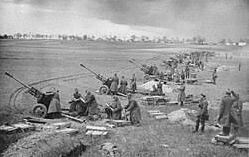

Résumé de la Bataille Berlin
La Bataille de Berlin, le dernier grand affrontement de la Seconde Guerre mondiale en Europe, s'est déroulée du 16 avril au 2 mai 1945.
- Contexte : Les forces soviétiques ont lancé une offensive massive pour capturer Berlin, la capitale du Troisième Reich, marquant la fin de la domination nazie en Europe.
- Déroulement :
- 16 avril 1945 : Début de l'offensive soviétique avec une attaque sur les lignes de défense allemandes à l'est de Berlin.
- Avril 1945 : Avancée rapide des forces soviétiques, encerclant Berlin et affrontant des défenses acharnées dans la ville.
- 30 avril 1945 : Adolf Hitler se suicide dans son bunker alors que les troupes soviétiques s'approchent.
- 2 mai 1945 : Capitulation de Berlin aux forces soviétiques.
- Issue : Victoire des Alliés, marquant la chute de Berlin et la fin du Troisième Reich.
- Importance : La Bataille de Berlin a été le point final de la Seconde Guerre mondiale en Europe, entraînant la capitulation inconditionnelle de l'Allemagne nazie le 8 mai 1945.
